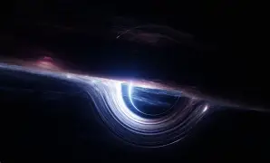

Alexander Fontes, April 15, 2026
In my opinion, this is single handedly the best film I have ever seen
in my entire life. Matthew McConaughey's preformance as Cooper was Oscar worthy
my only regret with this movie is that I did not watch it sooner.
*fun fact* The accuracy of space and how we may travel in the future was seen
as the most realistic depection of travel and physics ever seen by scientists.
